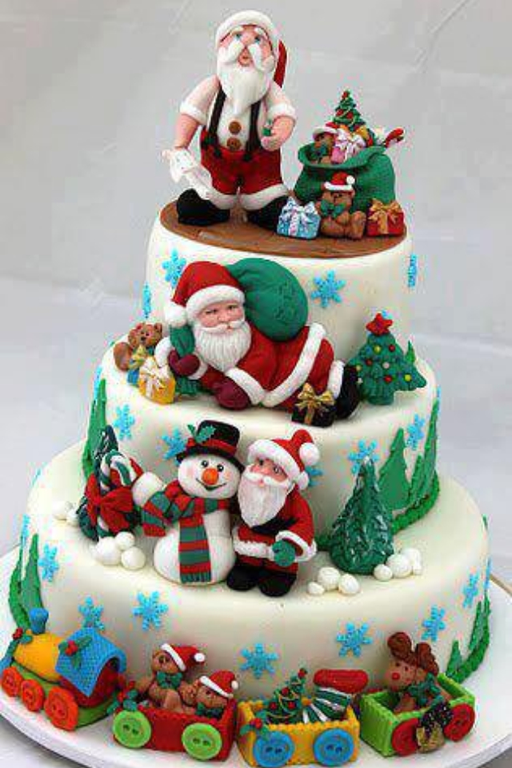

CHRISTMAS CAKE
- In a large bowl, add cranberries, prunes and raisins. Add juice lemon, orange juice and orange zest. Let it soak overnight. Preheat the oven at 160 degrees centigrade. Grease and line the 9 inch diameter pan on the base and around the periphery.
- Transfer the soaked fruit mixture into the pan, place the pan on flame and bring the mixture to boil. Simmer for 3-4 minutes. Take it off the flame and let it cool. In a bowl, mix all purpose flour and baking powder. Keep it aside. In another bowl, beat together butter and sugar. Add eggs and mix well.
- Now add vanilla essence, cinnamon and clove powder. Mix well. Add fruit mixture along with the juice and flour mixture. Fold everything well. Transfer the mixture to the lined pan and level it evenly with a spatula.
-
Bake the cake for 50 minutes or until skewer comes out clean. Leave the cake to rest for a few minutes inside the oven. Take out the cake and cool it completely. Carefully take out the pan, and peel off the parchment paper. Wrap the cake well with cling film and store. Cut and serve